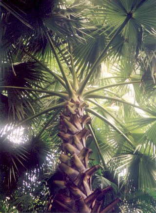

Borassus
flabellifer
Taxonomic Details

----- Correct Name
----- Classification
----- Synonyms
----- Common Names
Other Biological Details
----- Habit and Habitat
----- Diagnostic Features
----- Reproductive Biology
---------- Breeding System
---------- Phenology
---------- Pollinators
---------- Seed Biology
----------Seed
germination
------Cultivation
----- Major
Pests and Diseases
Economic Potential and Uses
----- Parts Used
------Uses
----- Harvesting Practices
----- Produce and Products
----- Chemistry
----- Processing Techniques
----- Other uses
----- Economic Potential to the Country
----- Export Potential
Miscellaneous Information
Literature
Taxonomic
Details
Correct Name :
Borassus flabellifer Linn.

Family : Palmae
Synonyms : Borassus flabelliformis Roxb.
Common Names :
English : Brab tree, Palmyra palm, : Doub palm (USA), Great fan palm, Lontar palm
(USA), Palmyra palm, Tala palm, Tal-palm, Toddy palm (USA), Wine palm.
Hindi: Tar, Tad, Tad mar, Tala,Tar-ka-jhar
Tamil: Panai, Karumpanai, karumpanei, nonku, Nonkuppanai, Pannei.
Kannada:
Tale, Taatinungumara, Tali, Talimara, Tallimara
Sanskrit : Tal,The Tal Palm,Thrinaraja
Malayalam: Pana, Karimpana, Nongu, Olapana
Telugu: TadiChettu, Karatalamu, Thati, Tatichettu.
Bengali:
Tal.
Back to Top
Other
Biological Details
HABIT & HABITAT
Borassus is a genus of four species of tall dioeci-ous palms.
Habitat: Distributed in the tropics of the Old World,
and B. flabellifer is the only species foundin India.
B. flabellifer & native of tropical Africa, is found in many of the comparatively
dry parts of India, Burma and Ceylon, and is common along the coastal areas
of the peninsula, Bihar, Bengal, and the northern portion of Ceylon. It is distributed
to Malaya.Also in Coastal areas, Cultivated fields and Plains,Dry areas,dry
place,Gardens,Hill forests,Hill slopes,Hotter parts,Outskirts,Plains,Road sides,Semi
deciduous forest,Villageswaste lands, in India.
BioticZone: Konkan plain, none, Peninsular India, Tropics, Upper Gangetic Plain,
Western Ghats,
Availability :
Misc: Bombay, Cape Comorin,Gulemalleblad,Matheran,Mhasla,Nagoa,Narsapur,none,Rajvadi
baug (Saurashtra),Regional Research Station,Brahmavar,Sindhudurg,Southern parts,Trombay,Tropical
regions,
Country:
Africa,India,Malayasia,Myamnar,Myanmar,none,Pakistan,Sri Lanka,
Zone:
Central,East,none,North,South,West,
State:
Andhra Pradesh,Bihar,Goa Daman Diu,Gujarat,Karnataka,Maharashtra,none,Tamil
Nadu,West Bengal,
District: Bangalore, Bombay, Champaran, Chandrapur, Dadra, Dakshin Kannada,
Daman, Diu, Kurnool, Medak, Porbander, Pune, Raigad, Rathnagiri, Ratnagiri
North, South Arcot, Thane, Tiruchi, Tirunelveli, Yawatmal,
Taluk: Tenkasi, Wadgaon,
Status : Not threatened
Back to Top
DIAGNOSTIC FEATURES
This palm attains a height of 40-60' (sometimes even 100') and a girth of 3½
- 7'. It bears a terminal crown of 30-40 large fan-like leaves, 3-6' in width.
The leaf stalks are 2-4' long, strong and fibrous. The stem is black and consists
of a hard outer portion mainly composed of stiff longitudinal fibres .The central
portion, the pith, is soft and starchy.
Back to Top
REPRODUCTIVE BIOLOGY
Male and female flowers are borne on different plants. In both cases, a large
quantity of sugary sap exudes when the inflorescence axis is tapped. The fruit
is large and fibrous, containing usually 3 nut-like portions, each of which
encloses a seed.
Breeding System :
The plant develops from
self-sown seed.
Phenology:
The spathes begin to
appear in November and December
Pollinators :
Seed Biology:
Seed Germination :
The plants develop from self-sown seed. In the earlier stages,
only the underground portion of the stem increases in thickness and 15-20 years
elapse before the aerial portion of the trunk elongates and develops into its
characteristic cylindrical black stem. temperature of about 81 to 85 degrees
F (27 to 29 C) is required.
Pool the seed, make a germinating bed out of chicken wire with
about 6 inches of germinating medium over the wire, put the whole bed on 4 legs
so you can see below the wire. To keep the medium from falling through the chicken
wire holes, put down a 1/2 inch layer of sphagnum moss. On top of this bed,
the seeds germinated quickly. The radicles works their way through the six inch
germinating bed and then protruded through the bottom. When they are down about
4-6 inches below the chicken wire, remove them, seed and radicle intact. You
now must at this point fool the seed and suspend it somehow above your new deep
pot, suspend the seeds on stakes about 10 inches above the pot the seeds were
to eventually root into. With this technique the leaves open up correctly, above
the soil level. Care must be taken to deal with the hanging radicles quickly
when they penetrate the initial chicken wire or the radicles turn dark brown
and then rot.
Cultivation:
Back to top
Harvesting
Practices and yield:
TODDY TAPPING
Generally, mature trees, 25-30 years old, are selected for tapping, and the
trees go on yielding for some 30 years. In some areas, where the soil is porous
and sandy, tapping may commence at the 15th year. The trees are usually given
rest once in 3 years. The daily yield of sap from a tree is on an average about
0-5 gal., and the total yield per season is usually about 40 gals. Much higher
yields (over a gal. or 12-5 Ib.) per day have been reported from Bihar (Sethi
and Ghosh, loc. cit.).
Trees of both sexes are tapped. In the case of
male trees, the flowering shoots, which look like finger growths on the principal
stalk, are bruised by rubbing them between wooden sticks. After a couple of
days, these are scraped with a tapping knife and their tips are pared off daily.
The juice begins to ooze out within a week after bruising, when several -fingers
are tied together and bent into a pot. The inflorescences of female trees are
tapped when the nuts are still very small, and only tlio tips are squeezed and
beaten. They are then pared off as in the case of male trees. A male tree is
reported to yield only 2/3 the quantity given by a female tree. It is commonly
believed that the sap from the male tree contains a higher proportion of sugar.
This, however, does not appear to be generally true (cf. Joachim and Kandiah,
loc. cit.; and Ghose, Agric. J. India, 192C, 15, 32).
The tappers climb twice a day, once in the morning
and once in the evening. In the morning, the tapper gets up with his spare pot
for bringing down sweet toddy. After he empties the juice into the collecting
pot, he dresses the cut by paring off a slice, limes the pot and replaces it.
In the evening, the juice is not lowered since the quantity collected during
the day is small, but the cut is dressed and the pot is given a shake. Tapping
is a skilful operation and a good tapper can look after 20-25 trees,working
for 4 hours in the morning and 2 hours in the evening. In some parts of India
as in Bihar, and in Ceylon, the pots for the collection of sweet toddy are thoroughly
cleaned, heated and smoked inside, and used, with or without liming.
Smoking the pots has been found to delay inversion
of sucrose, although not so well as coating them with lime. The amount of invert
sugar in the juice collected in smoked pots at night was found to be generally
in the neighbourhood of 0.5-0.6 g./ 100 c.c. and sometimes even lower. The juice
in limed pots contained as little as 0.05-0.06 g.of invert sugar per 100 c.c.
According to Mitraand Mittra (Indian J. agric. Sci., 1940, 10, 824), although
formalin is quite effective, lime is the best and cheapest preservative for
sweet toddy. It is best put inside the pot as a thin coating which remains moist
till the juice begins to trickle into it, and the effective dose is 0-25 g./200
c.c. or about 1/5 oz. per gal. of sap. Both inversion and fermentation stop
completely when pH reaches 8-0 or 8-1.
Back to Top
MAJOR PESTS AND DISEASES
This palm also is attacked by insects which affect the coconut palm (Cocos nucifera)
; the rhinoceros beetle (Oryctes rhinoceros Linn.), the red palm weevil (Rhynchophorus
ferrugineus Fabr.), the black headed caterpillar etc.. It is also liable to a fungus disease called bud-rot , caused by
Pythium palmivorum, which attacks the bud, eats into the growing point, and ultimately
kills the tree .
Economic
Potential and Uses
Parts used
Plant sap, Fruit
Uses:
1.A local drink Toddy is prepared.
Produce and Products
Toddy or Nira, Palm Jaggery
Back to Top
Chemistry
COMPOSITION OF SOME OF THE EDIBLE PRODUCTS FROM THE PALMYRA PALM
(Percent)
| |
Moisture
|
Protein
|
Fat
|
Mineral matter
|
Carbohydrates
|
Total Sugar
|
Disaccharides
|
Reducing sugars
|
Vitamin C
(mg/100 g)
|
Nira
Tar gur
Tender seed pulp
Cotyledon
Pulp of ripe fruit
Flour (sun-dried)_
|
85.94
8.61
92.6
80.99
77.22
12.06
|
0.23
1.73
0.64
0.75
0.67
4.81
|
0.02
0.08
0.1
0.12
0.15
0.31
|
0.29
1.81
0.26
0.85
0.68
1.91
|
13.52
88.47
6.29
17.29
21.28
80.91
|
12.6
84
..
..
..
..
|
11.6
79.9
..
..
..
..
|
0.4
2
..
..
..
..
|
5.7
..
13.1
11.3
24
..
|
Back to Top
Processing Techniques
PALM JAGGERY
The boiling of juice begins immediately after it is lowered from the tree. In
some parts, concentration is carried out at one stretch, while in othersthe juice
is first evaporated to 1/3 the bulk, and the comparatively thicker saccharine
solution is allowed to accumulate into a fairly large quantity, before being boiled
down to gur. Sethi and Ghosh (loc. cit.) have shown that sucrosein the juice suffers
very little inversion during its concentration
After the juice is brought down, it is strained into the boiling pot, leaving
behind the sediment of lime. Some 15-20 minutes after the commencement of boiling,
a white scum rises to the surface which is skimmed off and a few castor beans
are crushed and put in, to allay frothing. In the West Godavari dist. a little
coconut oil is used instead. After about 2 hours, the fire in the oven is lowered,
the contents of the pot stirred, and a small quantity of syrup poured into cold
water. If it hardens quickly, it is ready for being transferred into wooden moulds,
which are slightly moistened on the surface. Gur sets in about 15-20 minutes,
and amounts to 15-18% of the sap.
The palmyra gur, thus prepared, is a dark solid
with a characteristic flavour. Sometimes it is also treacly, especially if sugar
has suffered inversion. It comes into the market in flat rectangular pieces,
tied up in mats, made of palmyra leaves. It absorbs moisture, and in wet weather,
it becomes a semisolid sticky mass. This is due to the presence of deliquescent
salts in it. If lime is precipitated by passing in a slow current of carbon
dioxide before boiling the juice, the gur obtained is remarkable for its lightness
of colour and flavour. Sethi and Ghosh (loc. cit.) suggest the use of citric
acid, or an extract of unripe tamarind fruits to precipitate lime and to improve
the quality of gur.
Sometimes brown sugar-candy is also prepared from
palmyra juice. Raw juice is boiled down as before, but not to such a high degree
of concentration as in the preparation of gur. The syrup is then poured into
covered pots, and buried under-ground for some months, when crystals of sugar
candy are deposited in the pots. This is considered a delicacy and is known
as tal misri. It is also reputed to possess medicinal properties and is used
In coughs and pulmonary affections, and as a laxative for children. Almost the
whole of palm gur produced in the West Godavari dist. finds its way into the
refinery at Samalkot, owned by Messrs. Parry & Co. During 27-31, the factory
handled on an average 8,093 tons of palm gur per annum. Their factory at Nellikuppam
also handled a similar quantity of palmyra gur produced in the southern districts
of Madras.
Toddy & Nira
The palmyra is one of the palms yielding toddy,the country liquor. The other
important palms, which are tapped for toddy, are Phoenix sylvestris,Caryota
urens, Nipa fruticans, and sometimes also Cows nucifera. The fresh sap of these
palms, called ' sweet toddy ' or nira, contains about 12% of sucrose, and unless
suitably treated, fermentation into toddy starts almost immediately after collec-
tion.
While nira, tapped from the palmyra tree, is transparent,
pleasant-smelling, and sweet, toddy is a pale frothy liquid with a characteristic
aroma, and a slightly acid and pungent taste. It is a cheap and refreshing beverage
extensively used by the lower classes, and is a valuable source of revenue to
the State. Its nutritive value depends on the small amounts of sugar and yeast
in it. The latter is a good source of vitamin B complex. It had been observed that in areas where
the use of toddy is prevalent, vitamin B deficiency diseases are rare. Spontaneous
fermentation of the juice produces about 3% 0s alcohol and 0-1% of acids during
the first 6-8 hours. After this, alcohol content increases to nearly 6%, and
later begins to decrease,while the amount of acids continues to increase, rendering
the liquid unsuitable for human con-sumption. Butyric acid has been detected
among the acids and this gives a disagreeable odour to theliquid.
Some unused toddy is allowed to undergo acetic
fermentation to yield a cheap quality of vinegar. On account of its yeast content,
toddy is sometimes used in bread-making, but the resulting broad has an unpleasant
odour. Nira is a refreshing sweet drink and is also credited with medicinal
virtues. It is used as a stimulant and antiphlegmatic, and is also considered
useful in inflammatory affections and dropsy. ' Its use as a beverage is not
likely to extend because of the difficulty in preserving it. But the recovery
of sucrose contained in it, in the form of gur, has long been practised as a
cottage industry in Madras. It is suggested its extension into Bihar. Since palmyra sap
is also a source of toddy, precautions will have to be taken against the misuse
of permission granted for the preparation of gur.
The Fibre-Bassine
The leaf stalks are highly fibrous arid contain a large number of strong wiry
fibres of considerable length, suitable for the preparation of brushes and brooms.
Before the tapping season, it is usual to out off all the older leaves (15-20)
from the tree and to use leaf stalks for the preparation of fibre. Younger trees,
12-15' high, yield a larger number of leaf stalks. For the extraction of fibre,
the leaf stalk is torn apart into strips, after softening the ends by beating
with a mallet. The fibres are then separated from the adhering soft tissue by
combing the strips over a piece of wood to which a few nails are fixed. This fibre
is known as bassine. The best quality of fibre is obtained from the margins of
leaf stalks.
The extraction of palmyra fibre is a cottage industry. The fibre is' prepared
in considerable quantities in Krishna, Godavari and Tinnevelly dists., the Palghat
sub-division of Malabar, and in south Travancore. The produce is collected by
factories which clean and grade the material, and cut it into lengths varying
from 6-16". It is then dyed purple, tied into neat bundles and pressed into
bales. It is exported in two qualities, dressed fibre and graded fibre. The former
consists of fibre cut into exact lengths, measured in inches and half inches,
and the latter,, produced by a similar but rougher method, is sorted into 3 lengths
only.
According to Messrs, Aspinwall & Co., Colachel
(Travancore), brooms and brushes prepared from palmyra fibre are not used to
any large extent in India, and the consumption of the fibre in normal times
is very small. But during the War ('39-45) nearly 9 lakhs of fibre brushes were
prepared by them for the Supply Department.
Back to Top
Other Uses
1.The sap obtained from but spadices is taken in monitoring to cure
T.B. and stomach
diseases. Fermented toddy is taken as beverage.
2.Floral branches are supplied abundantly with sap;
the latter is sweet and tasty and comes out readily when the boat like bract
is split at the end; the sap is collected in earthenware pots, but soon ferments
through the action of many yeasts floating in the air. Fermented sap is the
toddy os commerce. The unfermented sap, Neera, is a refreshing and nourishing
drink.
3.The palmyra palm is one of the most useful trees
of India. It is one of the most striking palms of India, with its fine crown
of large fan shaped leaves and dark stems.The wt. per cft is 49-50 lbs.Grows
readily from seeds.
4.Leaves used for thatching for making mats bags
and fruits young seediligs edible, palm sap used for making jaggery and toddy.
Back to Top
Economical
Potential to the country
Palmyra fibre is exported mainly from the ports of Coconada, Calicut and Tuticorin.
Before 1940, the principal buyers -were the U.K., Germany, Japan, -Belgium,
the U.S.A. and the Netherlands. During the quinquennium ending in '44, the U.K.
imported 35-3% of Indian exports, and the U.S.A., 40-3%.
Export Potential:
Back to Top
Miscellaneous
Information
Back to Top
Literature
1.Bittle Bill, 1999, Common Names of Common (and
Uncommon) Palms, Virtual Palm Encyclopedia, Palm & Cycad Societies of Florida.
USA.
2.EURODICAUTOM, On-line Technical Dictionary in 12 languages provided by the
European Commission <
3. http://eurodic.echo.lu/cgi-bin/edicbin/EuroDicWWW.pl?page=expert
4.Mabberley D.J. 1997, The Plant-Book : a Portable Dictionary of the Vascular
Plants, 2d Edition, Cambridge University Press, Cambridge, U.K.USDA, ARS, 2000,
National Genetic Resources Program. Germplasm Resources Information Network
- (GRIN). [Online Database] National Germplasm Resources Laboratory, Beltsville,
Maryland. Available: www.ars-grin.gov/cgi-bin/npgs/html/taxdump.pl? borassus
(04 November 2001).
5.Singh, N. K. and Singh, D. P., 2001, Ethnobotanical Survey Of District
Balrampur,
Flora And Fauna, Vol.7. No.2 pp.59-666.The wealth of India, A
Dictionary of Indian Raw Materials and Industrial Products, Vol. I. A-B,
Publications and Information Directorate, CSIR, New Delhi, India, 1948.
7.Wiersema J. H. & León B. 1999, World Economic Plants : a Standard
Reference. CRC Press LLC.
8.www.plantapalm.com/vpe/photos/Species/ borassus_flabellifer.htm
9.www.plantapalm.com/centralfl/Database/ borassus_flabellifer.htm
10.Xie Zongwa & Yu Youqin (Editors), 1996, Materia
Medica, Chinese Terminology,
Vol. 1, Renminweisheng Publishing House Beijing, China. (Latin with authority
names and Chinese-simplified, text in Chinese).
Back to Top